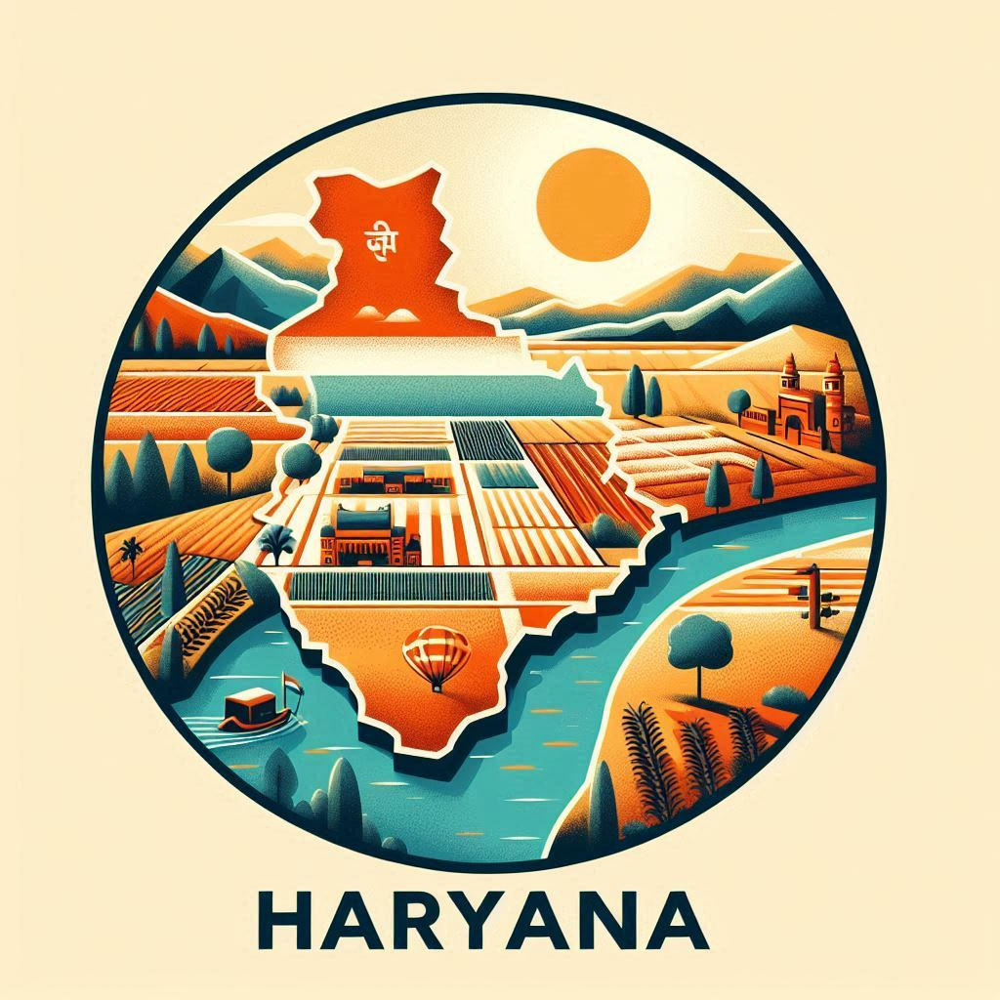
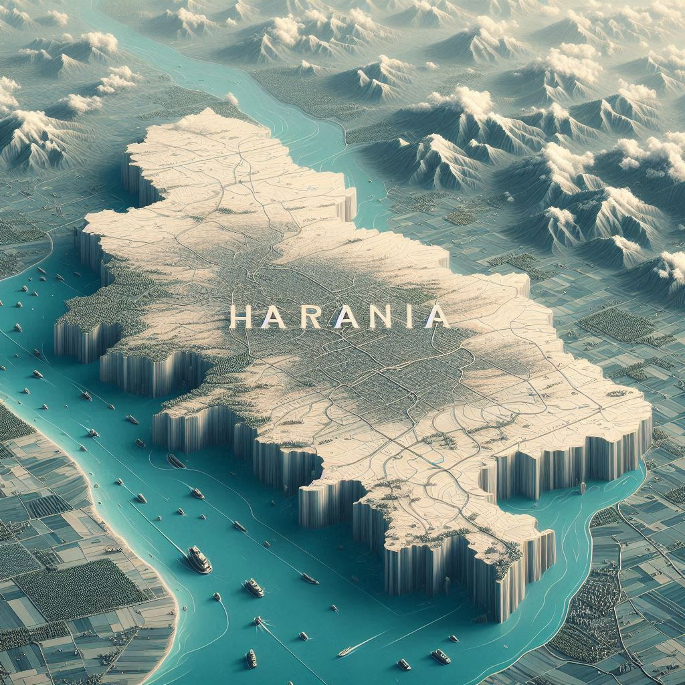

Haryana is located in the northern part of India and plays an important role in the country’s geography, economy, and cultural landscape. The state is known for its diverse terrain, with a mix of urban, rural, and agricultural land.
1. Boundaries and Neighbors:
- Punjab: To the northwest, Haryana shares a border with Punjab. The boundary reflects historical, political, and cultural ties.
- Himachal Pradesh: To the north, bordered by forested areas near the Shivalik Hills.
- Uttarakhand: Adjacent to the northeast, linked by the Yamuna River.
- Uttar Pradesh: Forms an eastern border, contributing to Haryana’s agricultural resources.
- Rajasthan: To the south and southwest, characterized by semi-arid plains.
- Delhi: Surrounds Delhi on three sides, creating extensive economic interactions.
2. Major Rivers:
- Yamuna River: Flowing along the eastern border, with great religious and agricultural significance.
- Sarasvati River: Historically significant, now considered dry but traceable in Haryana's terrain.
- Ghaggar-Hakra River: Originating in the Himalayas and flowing intermittently.
3. Physiography:
Northern Haryana: Features the Shivalik Hills with forested terrain and valleys.
Central Haryana: Fertile plains for agriculture.
Southern Haryana: Near the Aravalli Range with semi-arid conditions.


4. Climate:
- Summers: Hot and dry, temperatures often exceed 40°C.
- Winters: Cool temperatures dropping to 5°C or lower.
- Monsoon Season: June to September, bringing variable rainfall.
- Overall Climate: Semi-arid to subtropical.
5. Economy and Agriculture:
Fertile plains make Haryana a major grain-producing state, contributing to the Green Revolution with high yields of wheat and rice.
6. Urban Areas and Development:
- Gurugram (Gurgaon): Financial and IT hub.
- Chandigarh: Serves as the capital of both Haryana and Punjab.
- Faridabad: Major industrial city known for manufacturing.
7. Biodiversity and Protected Areas:
- Sultanpur National Park: Bird sanctuary near Gurgaon.
- Kalesar National Park: Habitat for tigers and leopards.
- Bhindawas Wildlife Sanctuary: Rich in birdlife and wetlands.
Conclusion:
Haryana’s diverse geography, rich plains, and strategic borders with key states have created a robust agricultural and economic landscape, contributing to India’s overall growth and tradition.